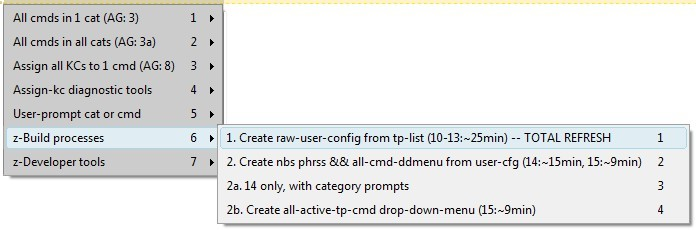

[BACK] (XBN-PhraseExpress is released under the LPGL 2.1)
I do not edit my phrases in the PhraseExpress application. I only edit them in TextPad (a plain-text editor by Helios Software Solutions). Whenever I make a change to a phrase, I import it into the PhraseExpress application before it can be used. This is akin to "compiling" the code.
Contents:
[go] Why I do not edit phrases in PhraseExpress[go] My personal development environment[go] XBN-PhraseExpress: TextPad-bootstrapsWhile XBN-PhraseExpress is tailored to creating and editing code in TextPad, although there are large portions of it that may be taken andvantage of by those developing exclusively in the PhraseExpress application (or elsewhere).
Also note that I use the Dvorak keyboard layout, which may explain the otherwise unweildy autotexts I've chosen, and does explain why I must use
{#insert zTPPaste}
instead of
{#CLIPBOARD -paste}.
[top] TextPad settings: Various requirements of specific processes and functionsIn addition to settings related to the text document-class, there are some additional requirements specific to particular features and functions:
TextPad > Configure > Preferences > View > Dockable log windows > Search Results
[S]earch > Invert [A]ll Bookmarks[E]dit > De[L]ete > [B]ookmarked-lines[top] Required TextPad settings: Text "*.txt" document classPlain-text phrase-files must have the postfix "px.txt". Because of this, phrase-files by default belong in the "*.txt" plain-text document class:
TextPad > Configure > Preferences > Document Classes > Text
There are three critical settings as it relates to XBN-PhraseExpress:
[go] Stripping trailing spaces when saving[go] Word-wrapping long lines[go] Saving word-wrapped text with no hard-breaks
[BACK] TextPad: Text document class setting: Strip trailing spaces from lines when savingSetting:
TextPad > Configure > Preferences > Document class options > Strip trailing spaces from lines when saving
This can be as you wish. Whatever setting you choose, however, it must be reflected in the XBNPE global-configuration-variable
zzTPTxtDefaultStripTrailingWSOnOrES
The consequence of not stripping trailing whitespace (tabs and spaces), is that processes that indeed need to strip trailing whitespace must do so manually. There are specific "strip-save" functions to assist you, which use this global configuration variable to determine if and when it should occur.
[BACK] TextPad: Text document class setting: Word wrap long linesSetting:
TextPad > Configure > Preferences > Document class options > Word wrap long lines
This can also be as you wish, and must also be reflected in a global-configuration-variable:
zzTPTxtDefaultWordWrapOnOrES
This is used by the set-word-wrap-based-on-the-TextPad-default phrases, such as
zWordWrapOffFromTPDfltState
[BACK] TextPad: Text document class setting: Saving word-wrapped text with no hard-breaksSetting:
TextPad > Configure > Preferences > Document class options > Word wrapped text > Save with no breaks in line
This setting must be selected ("Save with hard breaks" must be unselected), in order for many of the XBNPE build processes to succeed. In particular, the TPKC-build-process will fail if this setting is on (as will most processes that somehow save files without turning word wrap off first).
In 2013, I discovered the free-and-open-source VirtuaWin. It creates multiple desktops on a single monitor, effectively simulating multiple monitors. I use this to create three desktops. I use the key-commands zCASpRIGHT to move to higher-numbered desktops (such as one to two), and zCASpLEFT to move the other direction. In general, here is my setup:
I have one or more instances of TextPad open in this desktop. I also have an Xplorer2 window open, to quickly access files. Xplorer2 is a Windows Explorer replacement.
On this desktop, I always have two Windows Explorer windows open. The directory for both is
{#insert zROOT_DIR_XBNPE_MAIN}
One has this search-term:
*.px.txt datemodified:7/27/2013 (today's date)
and the other has this:
*_pcddmenu.px.txt datemodified:7/27/2013
These Explorer windows are on the left of my screen, always open (meaning never minimized), and PhraseExpress, when opened, is on their right. These search terms cause most-recently-edited phrase-files to automatically display. This setup makes importing the phrase-files that I'm working on as easy as possible.
Note that the latter search term is for xh-phrase-creator drop-down menu phrase-files. Separating "normal" phrase-files from drop-down-menu phrase-files (although ddmenu phrase-files can't be filtered out of the general "*.px.txt" list) is because these phrase-types require different settings in PhraseExpress. For example, ddmenu phrases are "manually confirmed" and normal phrases are not. Importing these phrase types together requires that the settings for one or the other must always be changed after the import is complete. Note that in XBN-PhraseExpress, normal and "pcddmenu" phrases are always stored in separate locations.
There are two primary reasons that I do not edit phrases in PhraseExpress.
There is no way to search or replace using regular expressions in the PhraseExpress application. In particular there is no way to make replacements on any set of files, whether they are in one common parent-directory, or dispersed througout many directories. For me, this is a critical need.
While PhraseExpress has many ways of importing phrases...

...there is only one way to export it: Into a proprietary PhraseExpress format.

Therefore, any phrases created in PhraseExpress exclusively, are trapped there. While copying a few phrases out of PhraseExpress is manageable...
...copying hundreds of phrases in this manner is practically impossible.
In addition, there are significant difficulties associated with importing multiple files. In addition to your code being "trapped" in PhraseExpress, the values in the choose-import-action dialog must be chosen on every import, and in the import-phrase-format dialog, values must be chosen for every file.
[top] XBN-PhraseExpress: TextPad-bootstrapsA "TextPad Bootstrap" ("tp-bootstrap") is a TextPad built-in command that is depended on by an XBN-PhraseExpress project. Specifically, all tp-bootstraps required by a project must be installed before installing the project itself. TextPad-bootstraps are what make it possible for XBN-PhraseExpress and TextPad to communicate.
Contents:
[go] Format and requirements[go] Utilities[go] TextPad-bootstraps, as documented in this section, are only applicable to the XKP and TKPC projects.[go] The tp-bootstrap list for the XBNPE-Key-Press (XKP) project[go] The tp-bootstrap list for the TextPad built-in commands (TPKC) project[go] Commands in the "Characters" category may not be TextPad-bootstraps[go] Steps to add a new tp-bootstrap (for XBNPE-admins only)A "TextPad-bootstrap" is a built-in TextPad command that has a "bootstrap key-command". A "Non-BootStrap command" (an "nbs-command") is a command that is not a tp-bootstrap. A command that is not a tp-bootstrap may or may not have nbs-key-commands (nbs-kcs). An "nbs phrase" is a phrase that triggers a TextPad built-in command, that is not a tp-bootstrap (that does not have a bootstrap-kc). The "primary key-command" for a TextPad command is:
[BACK] TextPad-bootstraps: Steps for adding a new tp-bootstrap (for XBNPE-admins only)(See: tp-bootstrap locations)
Note that this section is meant for XBNPE administrators (developers) only.
{#insert zXPROOT_DIR_tpkc}/textpad__tpkc/for_v_7_0_9/user_config/
"Esc" and "TPKeys")BookmarkPrev zTPBookmarkGTPrev Srchmkprv __ES__ 100 {#insert zDOWN3}
BookmarkPrev zTPBookmarkGTPrev Srchmkprv yes 100 {#insert zDOWN3}
zTpkcSrchmkprvIsBtstrp_yes
{#insert zXPROOT_DIR_AG_tpkc}\cmd_cfg_global__bldprc06\search\search_BookmarkPrev.px.txt
search_BookmarkPrev.px.txt
zTestAllXKPTextPadBootstraps
zTestAllTpkcTextPadBootstraps
{#insert zXPROOT_DIR_tpkc}/textpad__tpkc/for_v_7_0_9/user_config/tp_ALL_cmds_pcddmenu.txt
"[BS]" to its ddmenu-entry.[BACK] TextPad-bootstraps, as documented in this section, are only applicable to the XKP and TKPC projectsWhile all XBNPE projects have TextPad-bootstraps only the XKP and TPKC projects require them to be in the form as described in this section. Once the TPKC project is installed and fully built (that is, once you have successfully run all build processes through at least 14, and imported all its output phrase-files), "installing" a TextPad-bootstrap is simply a matter of assigning that particular TextPad-command a key-command via the TPKC project:
Textpad > Configure > Preferences > Keyboard
Categories > "Cursor" > Commands > "PageDown"
PgdownzTpkcPageDownNbsKcCount
'0' to '1' (it must be currently zero, because zero means it has no key-commands!), andzTpkcPageDownNbsKcEsc1
\\\{#insert zPGDN\\\} [BACK] Commands in the "Characters" category may not be TextPad-bootstrapsThe "Characters" category is the only one in which commands do not have names. Instead, the "name" of each command is the character itself. This is unacceptable to the TPKC build process, which therefore changes each to a specific name. For example, 'Ã' is changed to "Char14AUpperTilde". Since this translation does not occur until after the TPKC-project is installed and built (meaning all build processes from 02 through 14 are successfully executed), no commands in this category may not be used as TextPad-bootstraps, until after all TPKC build processes have been successfully executed.
Note that this restriction only applies to the XKP and TPKC projects.

[BACK] TextPad-bootstrap: Format and requirementsAn example TextPad-bootstrap (which are split into two files):
zTPCopy -- TextPad built-in command: Edit > EditCopy
{#CTRL -chars c}{#insert zTSlp}{#sleep 10}
zTPCopyEsc
\\\{#CTRL -chars c\\\}\\\{#insert zTSlp\\\}\\\{#sleep 10\\\}
zTPCopyTPKeys
Ctrl+C
(This is displayed in un-compressed format. Also see phrase-format specifications.)
These three phrases, as a whole, define a TextPad-bootstrap.
[go] Main phrase: zTPCopy[go] Escaped (literalized) phrase: zTPCopyEsc[go] TextPad key-press phrase: zTPCopyTPKeysCollectively, the escaped and tp-key-press phrases are called the "non-main" tp-bootsrap phrases.
To "install" a TextPad-bootstrap is to simply create (and then import) these three phrases, and actually assign the configured key-command, via
Textpad > Configure > Preferences > Keyboard
(See the screenshot below.) Unfortunately, this is a largely manual process. For example, "c2pl" and its related utilities--along with everything else in XBN-PhraseExpress--are not available until at least the XKP-project is installed. Importantly, any errors in a tp-bootstrap will cause its depend-ing XBNPE-projects to fail--unpredictably, and without any diagnostic information. Each major XBNPE project, however, has a testing function to ensure that all bootstraps are, at least roughly, properly installed.
TextPad-bootstraps--as well a much of XBN-PhraseExpress--are only useful, and usable, from within the TextPad application.

[BACK] TextPad-bootstraps: Configuring them specifically for the XKP (or TPKC) projectThe steps in this section must be run for the XKP-project first, and then again for the TPKC-project.
For every TextPad-bootstraps in the XKP-project (or in the TPKC-project):
TextPad > Configure > Preferences > Keyboard > Categories > [category-name] > Commands > [command-name] > "Press a new shortcut key" > [Assign-button][Mark All] button.TextPad > Edit > Copy other > Bookmarked linesAs an example, here is the resulting text for a "fresh" TextPad installation (as if TextPad was just installed, and no custom key-commands were assigned), for all tp-bootstraps in the XKP-project:
DocumentStart Ctrl+Home EditCopy Ctrl+C EditCut Ctrl+X EditDupLine Ctrl+Shift+Alt+V EditPaste Ctrl+V FileClose Ctrl+W FileNew Ctrl+N FileSave Ctrl+S SelectAll Ctrl+A ToggleWordWrap Ctrl+Q, W WordLeftExtend Ctrl+Shift+Left WordRightEnd Ctrl+Right WordRightEndExtend Ctrl+Shift+Right
[BACK] TextPad-bootstraps: UtilitiesAll these utilities require the name of the main tp-bootstrap phrase to be in a variable named
zvBTSTRP_PHRS_NM
zTPBtstrpEscKC_M_bspm: Gets the escaped key-command, after unescaping itzTPBtstrpEscPhrsNm_M_bspm: Gets the name of the phrase containing the escaped key-command.zTPBtstrpTPKeys_M_bspm: Gets the value of the TextPad key-press.zTPBtstrpTPKeysPhrsNm_M_bspm: Gets the name of the phrase containing the TextPad key-press.Phrase-creators for these utilities are available via xhtb.
Try this example now in a new TextPad document.
tpbsutildemo
{#SETPHRASE -description zvBTSTRP_PHRS_NM -content zTPCopy -autotext zvBTSTRP_PHRS_NM -folder ctvv_folder}
{#insert zTPBtstrpEscPhrsNm_M_bspm}:{#ENTER}{#TAB}
{#insert zTPBtstrpEscKC_M_bspm}{#ENTER}{#BKSP}
{#insert zTPBtstrpTPKeysPhrsNm_M_bspm}:{#ENTER}{#TAB}
{#insert zTPBtstrpTPKeys_M_bspm}{#ENTER}
Output:
zTPCopyEsc:
{#CTRL -chars c}{#insert zTSlp}{#sleep 10}
zTPCopyTPKeys:
Ctrl+C
[BACK] TextPad-bootstraps: Phrase and file locationsOn disk, the phrase-files for all TextPad-bootstraps go into a single directory:
{#insert zXPROOT_DIR_tpkcUsrCfgUserBase_M_tpkcum}
Note that all TextPad-bootstrap phrases, on a per-project basis, are required to be split into two phrase-files. Specifically, all "main" phrases are placed in one file, and all "non-main" (escaped and tp-keys) phrases are placed in another. This makes it possible to execute the TPKC-build-process for ..................... multiple users.
The specific files in this directory are:
tp_bootstraps_for_xkp_project.px.txttp_bootstraps_for_xkp_project_esc_tpk.px.txttp_bootstraps_for_tpkc_project.px.txttp_bootstraps_for_tpkc_project_esc_tpk.px.txtAll tp-bootstrap phrase-files, for all projects, are imported to this one location in the PhraseExpress application:
XBNPE: Parent folder >
XBNPE: TextPad built-in commands (TPKC) >
XBNPE-TPKC: User-spcfc phrases: [YOUR_TPKC_USER_DIR_NAME] >
User-specific command configuration
[BACK] TextPad-bootstrap: Main phraseAll main tp-bootstrap phrases in a single project are placed in a single phrase-file
zTPCopy -- TextPad built-in command: Edit > EditCopy
{#CTRL -chars c}{#insert zTSlp}{#sleep 10}
The XKP-project requires "raw" PhraseExpress key-presses in the phrase body, where each is followed by a call to zTSlp
zTPFileOpen -- TextPad built-in command: File > FileOpen
{#insert zCpOO}{#sleep 1750}
The TPKC-project requires x-key-presses (which automatically integrate a call to zTSlp).
"zTP". Example value:
zTPCopy -- TextPad built-in command: Edit > EditCopy
zTSlp{#insert zTPCopy}{#sleep 50}[BACK] TextPad-bootstrap: Escaped (literalized) phraseThis and the TextPad-key-press phrase are called the "non-main" tp-bootstrap phrases. All "non-main" (for a single project) must be placed in the same phrase-file.
zTPCopyEsc
\\\{#CTRL -chars c\\\}\\\{#insert zTSlp\\\}\\\{#sleep 10\\\}
'z' at the beginning, and "Esc" at the end.
"zTPCopyEsc"'\'). This is how you "escape" phrase-express code. For example, if the main-phrase's value is equal to
{#CTRL -chars c}{#insert zTSlp}{#sleep 10}
\\\{#CTRL -chars c\\\}\\\{#insert zTSlp\\\}\\\{#sleep 10\\\}(See the available tp-bootstrap utilities.)
In order to diagnose key-command conflicts (two or more commands having the same key-command), it is important to be able to display the tp-bootstrap's key-command (the value of the main phrase) to the user. Having this redundant escaped-version is the only way. In particular, this is displayed in the various TPKC debugging utilites (the "Debug" and "List" commands), and in the "Assign all KCs" process when the pause-on-kc field flag is on (second screenshot below).
Escaped key-commands--both for tp-bootstraps and Non-BootStraps (nbs)--also make much of the TPKC build process possible. In particular, it makes it possible for TPKC adiminstrators to run the build process for ........ others.
[BACK] TextPad-bootstrap: TextPad key-press phraseThis and the escaped phrase are called the "non-main" tp-bootstrap phrases. All "non-main" (for a single project) must be placed in the same phrase-file.
zTPCopyTPKeys Ctrl+C
Must be equal to the name of the main tp-bootstrap phrase, with an additional 'z' at the beginning, and "TPKeys" at the end. Example value:
zTPCopyTPKeys
Must be the exact value printed in the TextPad "all-command list", for this particular command. For example the built-in TextPad command
EditCopy
has a tp-bootstrap phrase name (the name of its main-phrase) of:
zTPCopy
Its key-command, as listed in TextPad, is
Ctrl+C
Since the value of this phrase is not PhraseExpress code, it should therefore have no sleep or calls to zTSlp
Below are three screenshots.
"EditCopy" command, and its key-command "Ctrl+J"[List] button. This button prints out all key-commands, for all commands in the currently-selected category. When the "All" category is selected, pressing the [List] results in the "TextPad all-command list", which is needed by the initial user facing build-process in the TPKC project.zTP*TPKeys

